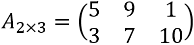
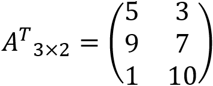
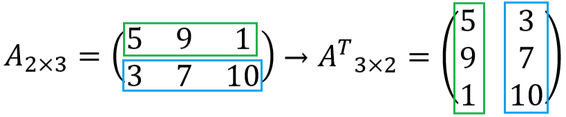

TRANSPOSE MATRIKS
Gak cuman fakta yang bisa dibalik, matriks juga bisa dibalik loh! Matriks yang dibalik disebut dengan transpose matriks. Transpose matriks adalah matriks yang dapat diperoleh dengan cara menukar baris dan kolom atau menukar kolom dan baris. Penulisan transpose matriks adalah dengan menambahkan huruf T atau t, lalu dipangkatkan pada matriks yang ditranspose. Coba teman-teman lihat gambar di bawah ini.
Diketahui ada sebuah matriks A dengan ordo 2×3 ingin ditranspose. Apa matriks AT? Jawabannya ada pada gambar di bawah ini.
Bagaimana cara mentransposekan matriks tersebut? Caranya adalah baris pertama pada matriks A berubah menjadi kolom pertama pada matriks AT, dan baris kedua pada matriks A berubah menjadi kolom kedua pada matriks AT.
